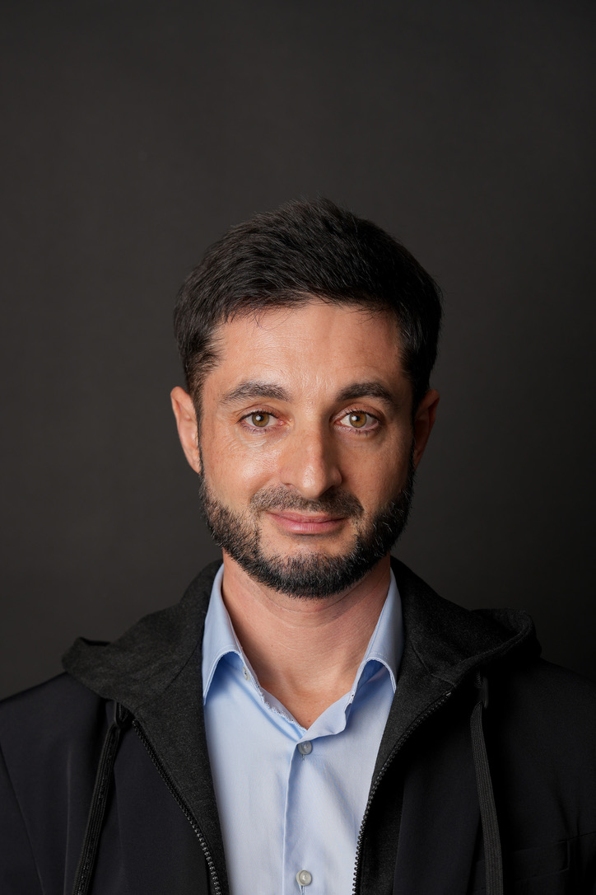
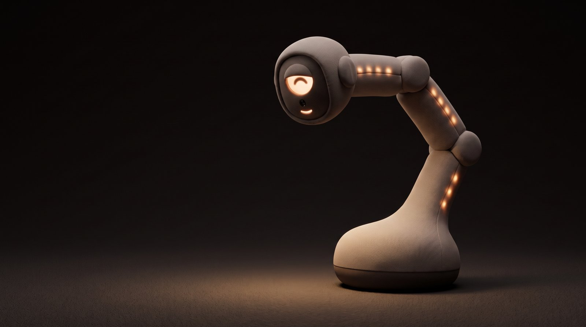
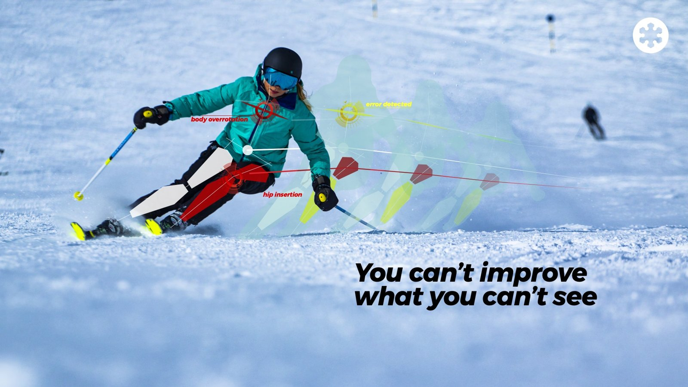
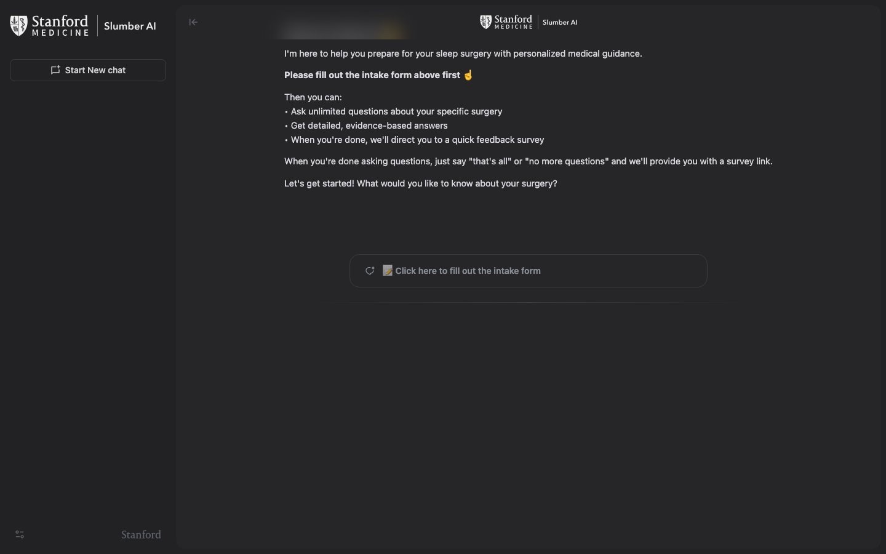
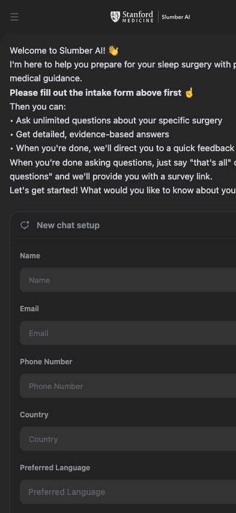
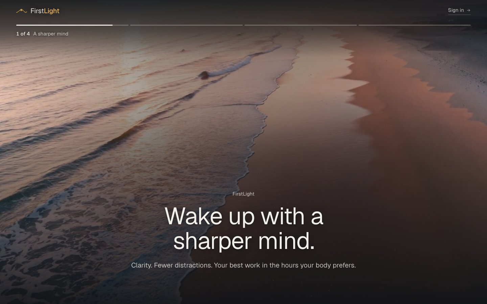
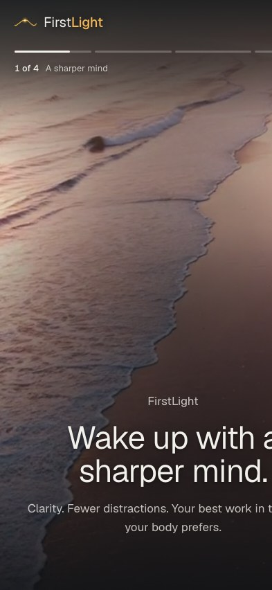
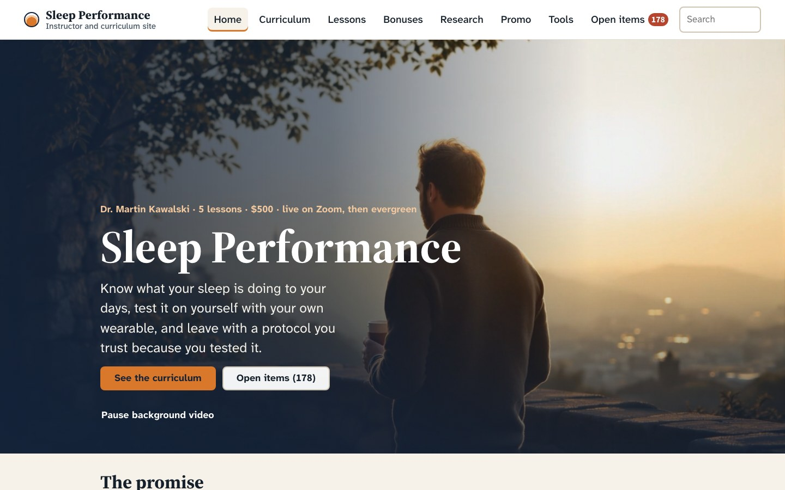
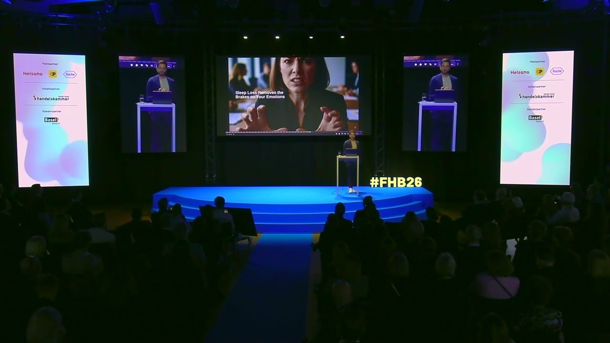

At Stanford I investigate sleep and longevity. I turn what I learn into things people can use, and right now I'm building Lumos.


Lumos, designI'm building Lumos, a companion robot for older adults who live alone. It talks, remembers your life, and nudges you back toward your people.
Yoichiro Hara and I are building it ourselves, from the software and our own fine-tuned model to the body. The working prototype talks with us every day.

SnowcookieA ski wearable that reads your body mechanics and measures fatigue, to prevent injuries on snow. I invented it with Olympic champion Bode Miller.
Finalist in Intel's Make It Wearable challenge. Taken from an idea to a product in stores, including in Japan.


An assistant that answers sleep surgery patients' questions before their operation, in their own language.
Tested by more than 40 sleep surgeons. Presented at AAO-HNSF 2025.
slumber-ai.vercel.app

An iPhone and web app that measures how sharp you are each morning, against your own sleep.
A 90-second morning check, wearable data kept private, and a profile that learns your own pattern.
firstlight-zoe-demo.vercel.app
A live course that teaches people to read their own wearable, see what their sleep is doing to their days, and test a change on themselves.
Five lessons, with tools that read your own sleep data.
My AI chief of staff. It runs around the clock on a Mac mini, reads my calendar, mail, wearables and notes, and briefs me every morning.
Turns voice recordings and meetings into searchable notes, with the speakers named. 400 automated tests.
Moved a psychiatry practice's medical records to a new system. Paid, and in production.
What I've told rooms full of clinicians, founders and students, in a sentence each.

Sleep and mental health run both ways. A bad night makes the next day's feelings louder, and a worried mind makes the next night shorter. Treat one and the other moves.
Keynote, FutureHealth Basel 2026
Tired people rate their own judgement as fine long after it isn't. For a founder, sleep is part of the job, the thing that lets serious people last.
Sleep for Founders, Bay Area, June 2026
What centenarians' sleep and daily rhythms tell the rest of us about ageing well, and what a wearable can and can't see of it.
Sleep and Aging course, R42 Institute
At Stanford I investigate sleep and longevity. BlueNotte is my study of sleep among the centenarians of Sardinia, and most of what's on this page started there.